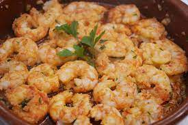

:
Gambas

-
En una cazuela ponemos el aceite de oliva virgen extra con las guindillas
- Pelamos los dientes de ajo y cortamos en rodajas finitas. Calentamos y doramos los dientes de ajo laminados
- Un truco es retirar estos ajos y seguir con la receta, se incorporarían al final del todo. Así logramos el ajo en su punto y se hidrata con parte del caldo que suelta la gamba. La perfección en las gambas al ajillo
- Echamos las gambas previamente escurridas al aceite. Subimos la temperatura y salpimentamos al gusto. En un minuto el aceite cambiará de color, no os asustéis, la gamba suelta su caldo y con la temperatura, emulsiona
- Añadimos las guindillas y los ajos. Removemos e juntamos sabores. Servimos inmediatamente en cuanto esté la gamba en su punto justo de cocción, jugosa y con ese punto picante delicioso.